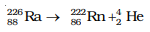
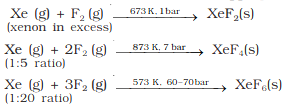
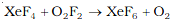
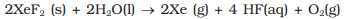
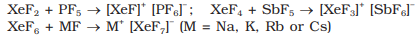
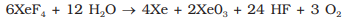
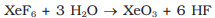
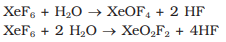

Group 18 Elements
Group 18 consists of six elements: helium, neon, argon, krypton, xenon
and radon. All these are gases and chemically unreactive. They form
very few compounds. Because of this they are termed noble gases.
Occurence:All the noble gases except radon occur in the atmosphere. Their
atmospheric abundance in dry air is ~ 1% by volume of which argon
is the major constituent. Helium and sometimes neon are found in
minerals of radioactive origin e.g., pitchblende, monazite, cleveite. The
main commercial source of helium is natural gas. Xenon and radon
are the rarest elements of the group. Radon is obtained as a decay
product of 226Ra.

The important atomic and physical properties of the Group 18
elements along with their electronic configurations are given below:
Electronic Configuration:
All noble gases have general electronic configuration ns2np6
except helium which has 1s2. Many of the properties of noble
gases including their inactive nature are ascribed to their closed
shell structures.
Ionisation Enthalpy:
Due to stable electronic configuration these gases exhibit very high
ionisation enthalpy. However, it decreases down the group with increase
in atomic size.
Atomic Radii:
Atomic radii increase down the group with increase in atomic
number.
Electron Gain Enthalpy:
Since noble gases have stable electronic configurations, they have no
tendency to accept the electron and therefore, have large positive values
of electron gain enthalpy.
Physical Properties: All the noble gases are monoatomic. They are colourless, odourless and tasteless. They are sparingly soluble in water. They have very low melting and boiling points because the only type of interatomic interaction in these elements is weak dispersion forces. Helium has the lowest boiling point (4.2 K) of any known substance. It has an unusual property of diffusing through most commonly used laboratory materials such as rubber, glass or plastics.
Chemical Properties:
In general, noble gases are least reactive. Their inertness to chemical
reactivity is attributed to the following reasons:
(i) The noble gases except helium (1s2) have completely filled
ns2np6 electronic configuration in their valence shell.
(ii) They have high ionisation enthalpy and more positive electron
gain enthalpy.
The reactivity of noble gases has been investigated occasionally,
ever since their discovery, but all attempts to force them to react to
form the compounds, were unsuccessful for quite a few years. In March
1962, Neil Bartlett, then at the University of British Columbia, observed
the reaction of a noble gas. First, he prepared a red compound which
is formulated as O2+PtF6-.
He, then realised that the first ionisation
enthalpy of molecular oxygen (1175 kJmol-1) was almost identical with
that of xenon (1170 kJ mol-1). He made efforts to prepare same type of
compound with Xe and was successful in preparing another red colour
compound Xe+PtF6- by mixing PtF6 and xenon.
After this discovery, a number of xenon compounds mainly with most electronegative elements
like fluorine and oxygen, have been synthesised.
The compounds of krypton are fewer. Only the difluoride (KrF2) has
been studied in detail. Compounds of radon have not been isolated
but only identified (e.g., RnF2) by radiotracer technique. No true
compounds of Ar, Ne or He are yet known.
(a) Xenon-fluorine compounds:
Xenon forms three binary fluorides, XeF2, XeF4 and XeF6 by the
direct reaction of elements under appropriate experimental conditions

XeF6 can also be prepared by the interaction of XeF4 and O2F2 at 143K.

XeF2, XeF4 and XeF6 are colourless crystalline solids and sublime
readily at 298 K. They are powerful fluorinating agents. They are readily
hydrolysed even by traces of water. For example, XeF2
is hydrolysed to give Xe, HF and O2.

The structures of the three xenon fluorides can be deduced from
VSEPR and these are shown in the following Figure. XeF2 and XeF4 have linear and
square planar structures respectively. XeF6 has seven electron pairs
(6 bonding pairs and one lone pair) and would, thus, have a distorted
octahedral structure as found experimentally in the gas phase.
Xenon fluorides react with fluoride ion acceptors to form cationic
species and fluoride ion donors to form fluoroanions.

(b) Xenon-oxygen compounds


Partial hydrolysis of XeF6 gives oxyfluorides, XeOF4 and XeO2F2.

XeO3 is a colourless explosive solid and has a pyramidal molecular structure XeOF4 is a colourless volatile liquid and has a square pyramidal molecular structure.
Uses: Helium is a non-inflammable and light gas. Hence, it is used in filling balloons for meteorological observations. It is also used in gas-cooled nuclear reactors. Liquid helium (b.p. 4.2 K) finds use as cryogenic agent for carrying out various experiments at low temperatures. It is used to produce and sustain powerful superconducting magnets which form an essential part of modern NMR spectrometers and Magnetic Resonance Imaging (MRI) systems for clinical diagnosis. It is used as a diluent for oxygen in modern diving apparatus because of its very low solubility in blood.
Neon is used in discharge tubes and fluorescent bulbs for advertisement display purposes. Neon bulbs are used in botanical gardens and in green houses. Argon is used mainly to provide an inert atmosphere in high temperature metallurgical processes (arc welding of metals or alloys) and for filling electric bulbs. It is also used in the laboratory for handling substances that are air-sensitive. There are no significant uses of Xenon and Krypton. They are used in light bulbs designed for special purposes.